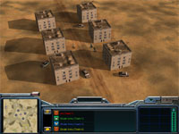
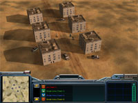

 Download this map for Generals Zero Hour or Generals
I don't remember how this map started out, but it never felt like a good one. The slopes surrounding the bases feel a bit too steep and un-natural, and it's hard to navigate your troops in the middle. There is plenty of building space though.
Quite large base areas with three entrances. Some civilian buildings stand between you and your closest enemies. Capture them to hold them off. There are civilian cars as well for suicide bombers. The middle part consists of five crater lakes with small islands on the bottom. There is a skyscraper and some other buildings around the central crater.
As usual, I've addeed one supply dock and some smaller supply piles nearby each starting position. Some extra supplies have been placed towards the middle. There are two hospitals and two oil refineries along the sides of the map. The middle parts hold deep craters where oil derricks and supplies can be found. For your eyes only? The treasures in the craters won't be captured unless you send in paratroops or terrorist ambushs. This is intended though. Only USA will be able to harvest the supplies in the central crater.
I have not tested this map a lot since I don't like it. Last time I did it I lost against two computers although I was playing pretty well. Since it is hard to cover all entrances, GLA troops can blast into your base and attack anything that moves. Oil refineries and hospitals are captured by the computer, but the crater oil derricks are out of range, something the computer cannot figure out himself...